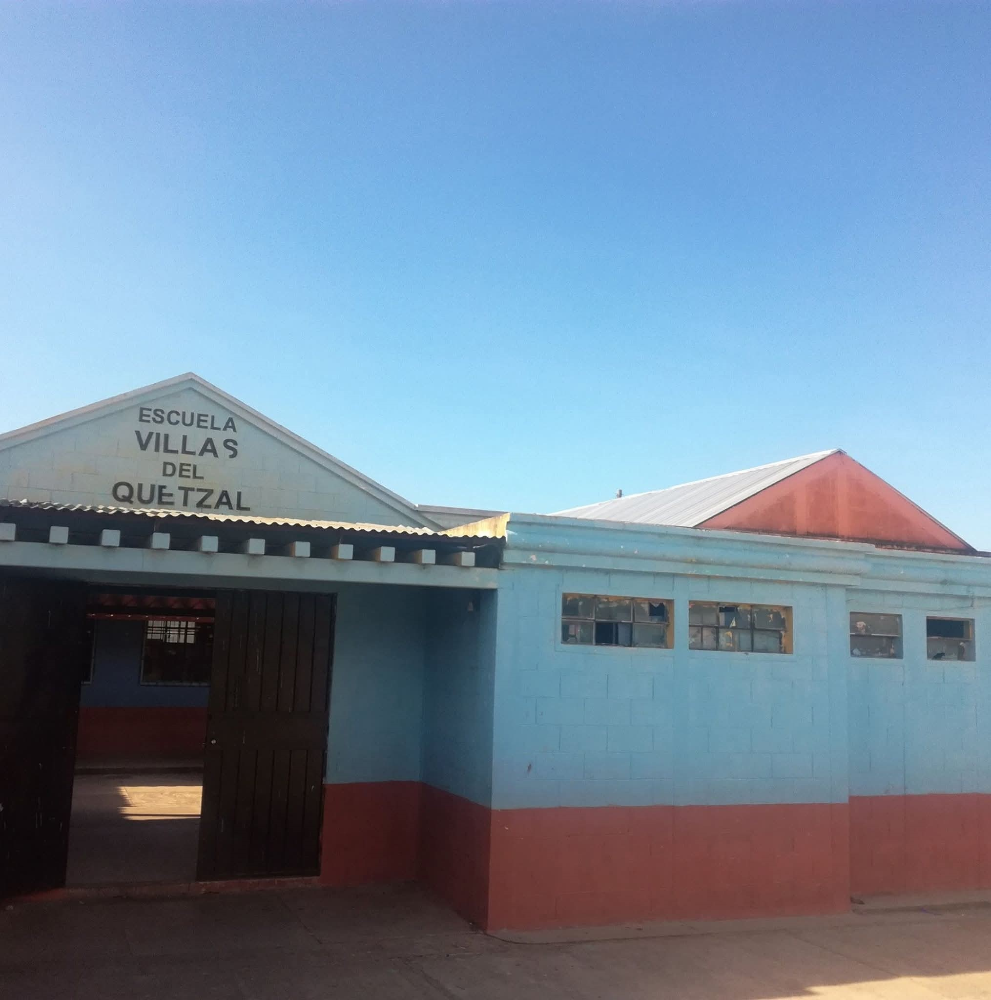
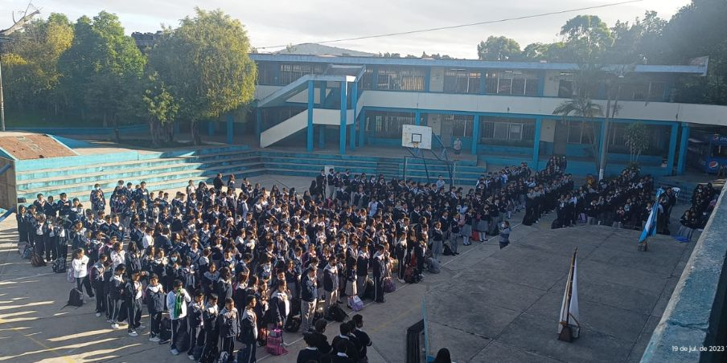
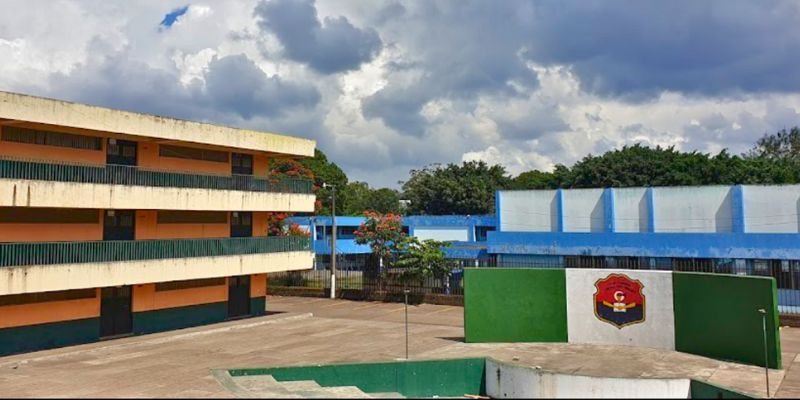
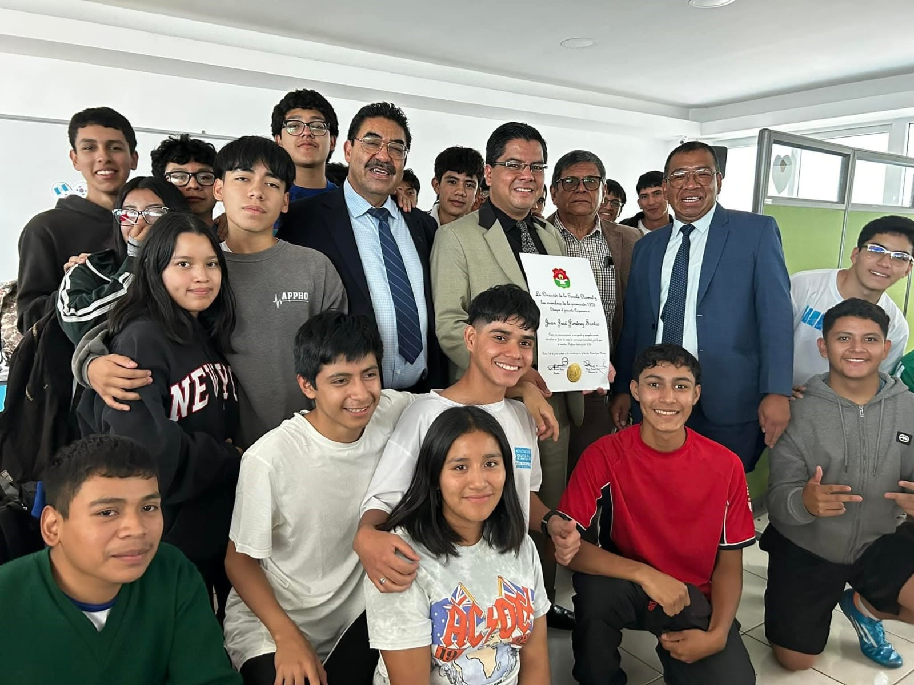

|
|
Inicie mis estudios en la Escuela Oficial Rural Mixta Villas Del Quetzal Jornada Vespertina, Algunas de mis materias favoritas eran: Educacion Fisica, Matematicas y Expresion Artistica. En la primaria no fui un alumno destacado, pero tampoco fui un mal alumno, cumplia con todo pero no a un nivel de excelencia. Las materias que se me dificultaron fueron Ciencias Sociales y Kaqchikel.

Realice mis estuidos basicos en el Instituto Nacional Experimental De Educacion Basica Dr Carlos Federico Mora, Mis materias favoritas fueron Matematias, Educacion Fisica, Fisica Fundamental y Electricidad.
No fui un alumno destacado, pero obtuve buenos promedios. Las materias que mas se me dificultaron fueron Kaqchikel, Musica y Ciencias Sociales.

Realice mis estuidos de carrera en la Escuela Normal Central Para Varones Z13. Me especialece en la carrera de Bachillerato En Ciencias Y Letras Con Orientacion En Computacion, Fui un alumno destacado en 5to,
Las materias que mas domine fueron: Programacion, Reparacion y Soporte Tecnico , Produccion De Contenidos Digitales, Laboratorio II, Matematica 5, Estadistica, Quimica y Fisica Fundamental, y las que se me dificultaron fueron:
Lenguaje y Literatura 5 y Biologia.


Actualmente estoy cursando el primer semestre de la carrera Ingenieria En Sistemas, en la Universidad Mariano Galvez De Guatemala, En la sede del Naranjo. Las materias que mas me gustan son: Logica De Sistemas,
Introduccion a Los Sistemas De Computo, y tengo dificultad en las materias de Contabilidad y Desarrollo Humano Y Profesional. Actualmente no estoy tan enfocado en la universidad, y es algo que quiero cambiar y poder sacar mejores promedios.
Poder graduarme de la universidad siendo un alumno destacado. Especializarme en el area de Soporte Tecnico y trabajar de ello.
Especializarme o obtener titulos y conociemiento de Electricidad, y mecanica de motocicletas.